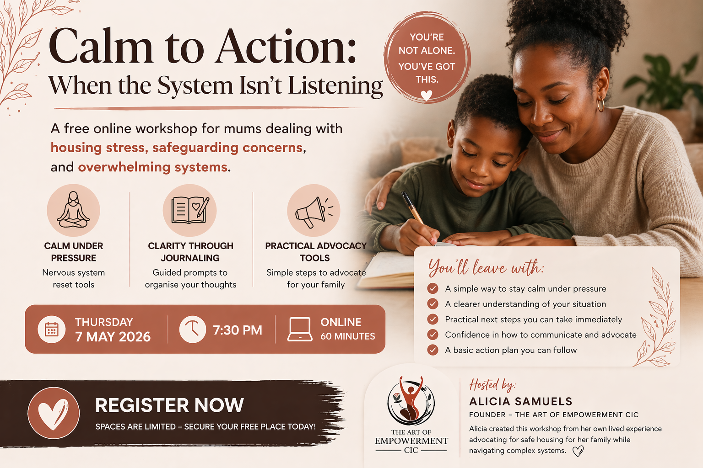

Upcoming Programme

Reset. Reclaim. Rise.
For mothers and children in temporary accommodation—restoring calm, rebuilding confidence, and creating a path out of survival and back into stability.
You are not stuck. You just haven’t been supported properly yet.
What this programme supports
Emotional reset — Create space to breathe and feel less overwhelmed.
Confidence rebuilding — Reconnect with yourself and move with clarity.
Practical action — Take one clear step forward each session.
Who this is for
For mothers in temporary accommodation who feel unheard, overwhelmed, and held back by the system.
Especially single mothers carrying everything alone, often while living in unsafe or unstable conditions.
Transformation
From feeling overwhelmed and stuck → to feeling calm and in control.
From feeling silenced → to feeling confident and self-assured.
From not knowing what to do next → to taking clear, grounded action.
Why this work matters
This work is rooted in lived experience. It is built from real advocacy, real pressure, and a real commitment to helping mothers and children move out of survival mode and towards stability.
Built from lived experience
This work is grounded in real lived experience, advocacy, and direct work within the community.
Featured and involved with organisations and media including BBC, ITV News, Shelter, and national housing campaigns.
Ready to take the next step?
You don’t have to stay in survival mode. This is your space to reset, be supported, and take real steps forward.
Join the sessionLimited spaces • Small group support
Or email: theartofempowermentuk@gmail.com